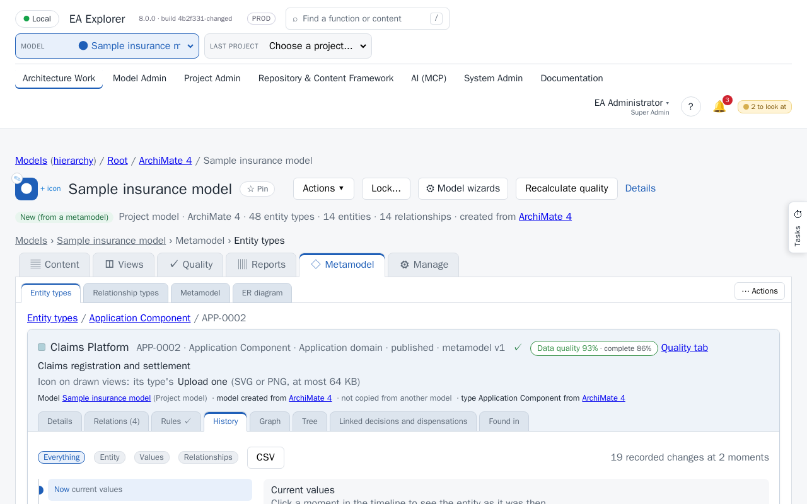

See everything that happened to an entity
For: Practising architects
Every change to one entity, who and when, before and after.

#/search?q=Claims%20PlatformWhy do this
Every change to an entity is kept: who, when, before and after. History answers "who changed this and why?" and lets you go back. See Versions, tags and merging.
Content work is the everyday heart of architecture: recording what exists and what should, and how it all connects. EA Explorer checks it against the metamodel as you go and keeps it as your change until it is reviewed.
In TOGAF terms: Phases B, C and D: recording the building blocks and relationships of the baseline and target architectures. See EA Explorer and the TOGAF Standard.
The goal: You see everything that happened to an entity.
Steps
- Open the entity (or right-click it) and choose History.
- Read it newest first; open an entry for before and after.